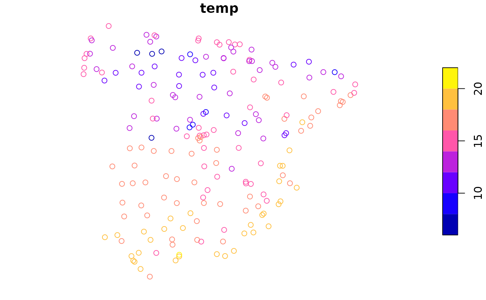
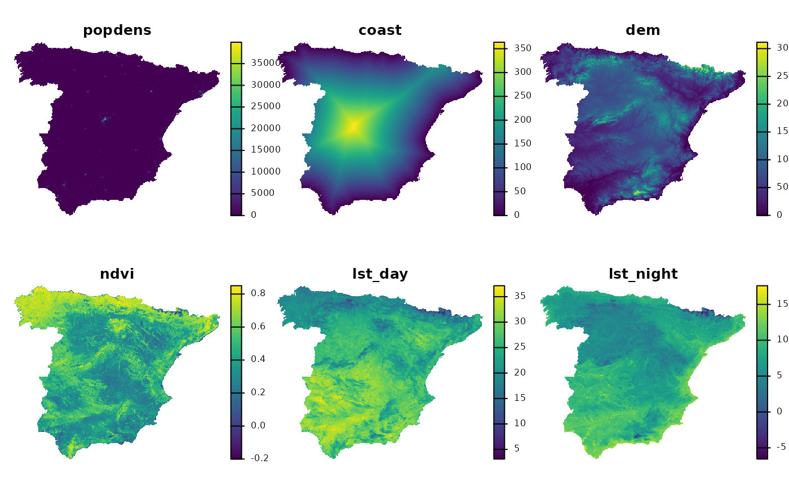
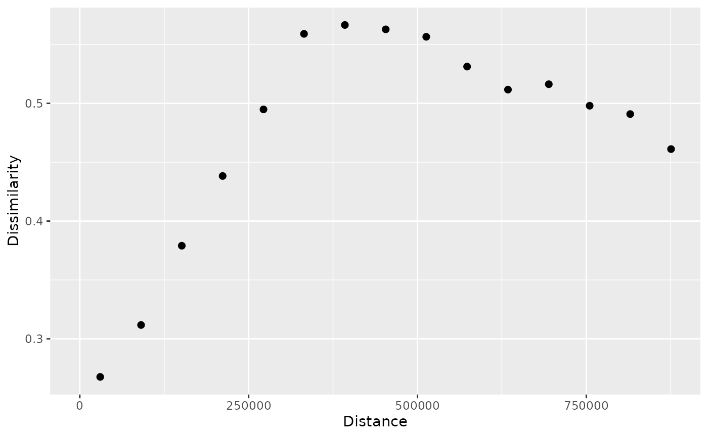
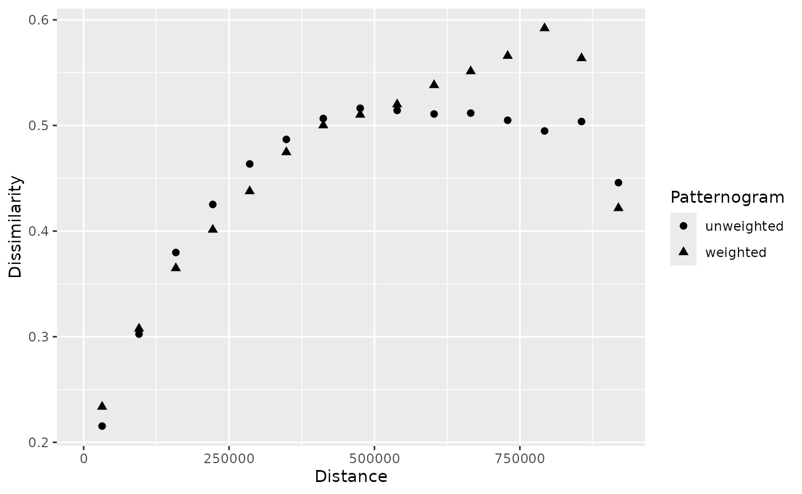
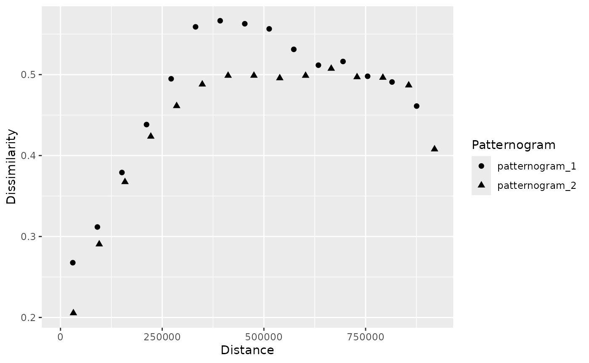
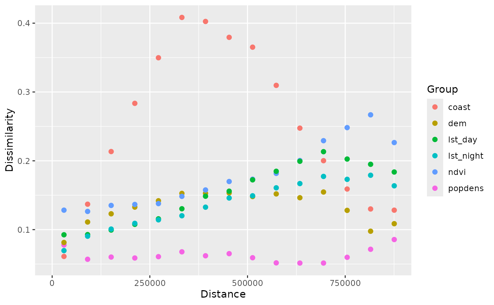
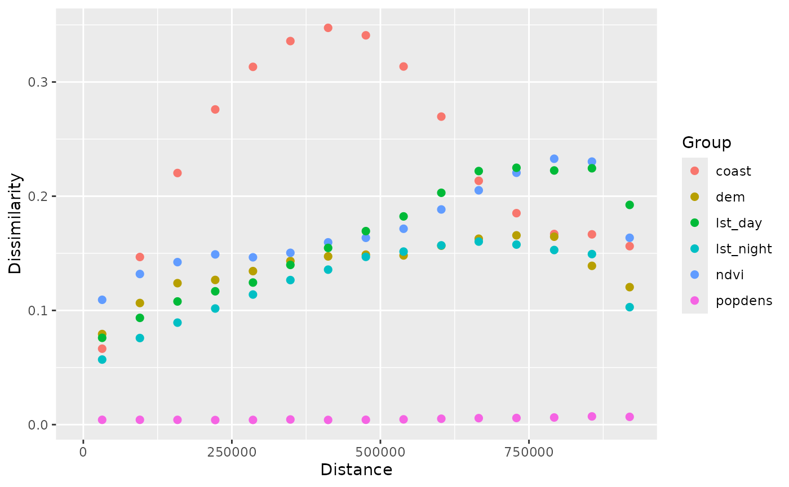
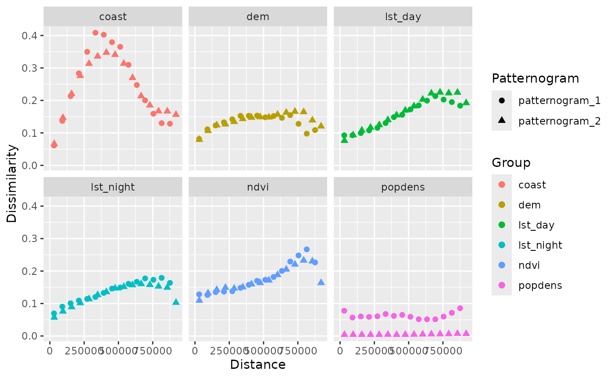

vignettes/articles/spatial-machine-learning.Rmd
spatial-machine-learning.RmdLet’s start by attaching the necessary packages.
Next, we load two spatial datasets. The first one is a spatial vector
point dataset with annual average air temperature measurements in
Celsius for Spain in 2019. The second one is a raster dataset with
predictors, such as population density (popdens), distance
to the coast (coast), elevation (dem), a
satellite-based Normalized Difference Vegetation Index
(ndvi), and annual average composites of the Land Surface
Temperature product for day (lst_day) and night
(lst_night).
temp_train = read_sf("/vsicurl/https://github.com/Nowosad/IIIRqueR_workshop_materials/raw/refs/heads/main/data/temp_train.gpkg")
plot(temp_train)
predictors = rast("/vsicurl/https://github.com/Nowosad/IIIRqueR_workshop_materials/raw/refs/heads/main/data/predictors.tif")
plot(predictors, axes = FALSE)
temp = extract(predictors, temp_train, ID = FALSE)
temp_train_all = cbind(temp_train, temp)
rpart_model = rpart(temp ~ ., data = st_drop_geometry(temp_train_all))
rpart_model
#> n= 195
#>
#> node), split, n, deviance, yval
#> * denotes terminal node
#>
#> 1) root 195 1546.773000 15.101570
#> 2) lst_night< 7.545278 70 286.239700 12.218960
#> 4) dem>=1271.976 9 15.529640 8.157678 *
#> 5) dem< 1271.976 61 100.362400 12.818160
#> 10) lst_day< 27.41322 52 52.454960 12.469420
#> 20) lst_night< 5.956942 35 21.516320 11.993630 *
#> 21) lst_night>=5.956942 17 6.703209 13.448980 *
#> 11) lst_day>=27.41322 9 5.042911 14.833110 *
#> 3) lst_night>=7.545278 125 353.141300 16.715830
#> 6) lst_night< 10.0302 69 92.904980 15.557040
#> 12) lst_day< 25.98267 24 13.758720 14.412790 *
#> 13) lst_day>=25.98267 45 30.963710 16.167310 *
#> 7) lst_night>=10.0302 56 53.423460 18.143620 *
var_imp = rpart_model$variable.importance
var_imp = (var_imp / sum(var_imp)) * length(var_imp)
var_imp
#> lst_night dem lst_day coast ndvi popdens
#> 2.3749075 1.8299494 0.8955837 0.4228831 0.3753616 0.1013147
pr_weighted = pr * var_imp
panel(pr_weighted, axes = FALSE)
p1 = patternogram(pr)
p2 = patternogram(pr_weighted)
p_12 = c(p1, p2, ids = c("unweighted", "weighted"))
plot(p_12)
p1_250 = patternogram(pr, cutoff = 250000)
p2_250 = patternogram(pr_weighted, cutoff = 250000)
p_12_250 = c(p1_250, p2_250, ids = c("unweighted", "weighted"))
plot(p_12_250)
p_tt = patternogram(temp_train)
#> Warning: The specified sample size is larger than number of points. Using all
#> points.
plot(p_tt)

p3 = patternogram(pr_weighted, group = TRUE)
plot(p3)